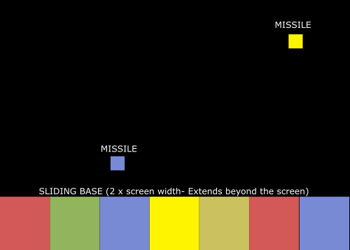
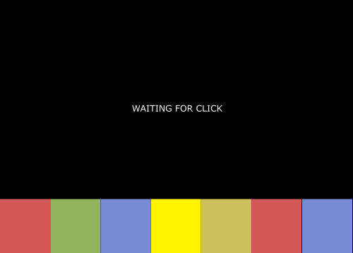
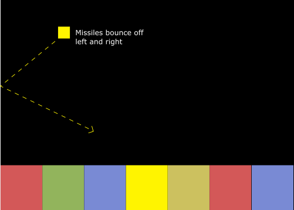
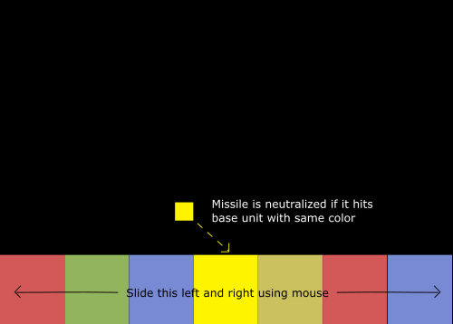
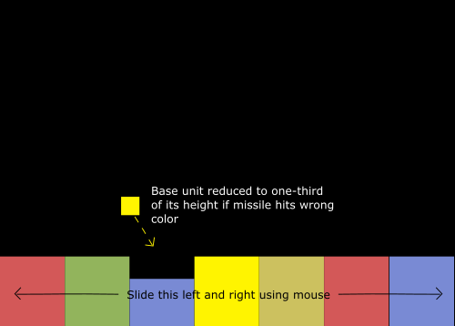
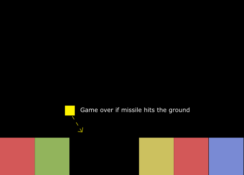

Color Slide is a fast paced game where you have to protect your base by destroying the incoming multi-colored missiles.

Color Slide is played on a single screen. The player controls the horizontal position of the base by sliding it with the mouse. Neutralize a colored missile by making it land on the base unit with the same color.
 
The game starts after the user clicks. Missiles are launched at regular intervals from the top in regular intervals in random directions. They bounce off of the left and right walls.
  
The player can slide the base unit left and right using the mouse to make sure the missile hits the right color. The missile is neutralized if it hits the same colored unit. If not, the unit's power is reduced by a third. As the score increases, the speed of the missiles increase. If any missile hits the ground, the game ends and high score is displayed.